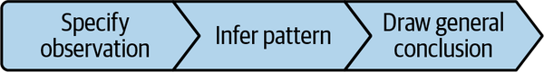
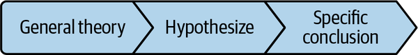
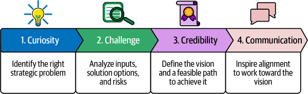
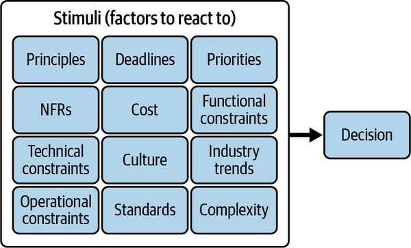

You’ve now learned the three main objectives of an effective enterprise architecture strategy in considerable depth. You know more about creating shared alignment across all stakeholders and making architecture information embedded and accessible to all roles that need it to make a decision. And you’ve seen the importance of both enabling and enforcing architecture standards. Putting that all together, you have a foundation for defining objectives that result in architecture decisions that will have alignment and be well informed, and architecture standards that will be thoughtful and well adopted.
You can do all that, though, and discover that it’s still not enough. You may learn that those architecture decisions weren’t quite the right kind of decisions. Maybe they weren’t proactive or aspirational enough, or they didn’t lead the way enough. The decisions were solving the problems of today, perhaps, which is good and necessary, but that’s not where architecture shines, and it’s not where architecture is uniquely positioned to add value.
Architecture shines in making great decisions where, if the decision is changed, the change causes a significant amount of rework. I’ve heard these called one-way door decisions, because there’s a finality about them. You only want to go one way. Whereas two-way door decisions have more flexibility. You still want to put in a good effort, but there is not as much of a consequence in getting it wrong or having to adjust.
For example, take cloud account design decisions’ impact of where to place workloads in the cloud. If, for some reason, there’s a significant change to that cloud account design, whereas the implementation of the change to the cloud accounts themselves might be fairly minor, the impact to the workloads will be enormous, because it will require a full migration from one account to another. Cloud account design is therefore ideally a one-way door decision. By contrast, the design decision to use a managed container service or a serverless managed container service is a two-way decision. Yes, there may be some rework if you have to change your deploy target, but it is less significant compared with one-way door decisions.
Given that architectural capacity is a finite resource, it makes sense to prioritize one-way door decisions highly, and to address these proactively. Proactive means to address something before it happens. Proactive architecture is about defining and addressing a target state vision, which is the picture of the destination—the future.
The opposite of proactive is reactive. Reactive means to address something after it has already occurred. Reactive architecture is about solving a problem, or making a decision, after a stimulus has already occurred. Examples of stimuli include a new or changed requirement, a new or changed intent, or an incident.
Speaking of incidents, let’s look into that example a little more closely. Proactive architects will define a target state vision to be where customers do not experience adverse impacts due to an application or infrastructure failure. To achieve this target state vision, proactive architects will conduct failure mode analysis and design the solution to mitigate failures and self-heal when failures do occur, such that an incident is prevented.
Reactive architects, when an incident does occur, will jump in to help the engineering team diagnose the root cause and recover operations. In the heat of the moment of reacting to an incident, reactive architecture is helpful. But isn’t it better to be proactive architecturally and prevent the incident in the first place?
If you answered yes, I’m inclined to agree with you. On the other hand, it is also quite reasonable to expect that you may not be able to predict every possible potential situation. For example, maybe you made what seemed like a perfectly valid assumption on how your system would behave under a stress condition. You might be constrained by timeline pressures to have to accept that risk and wait and see what happens. If you are unconstrained, though, you could instead be proactive to perform testing to output predictable system behavior.
This balancing of aspiration (for example, preventing incidents) with constraints (such as limited time and/or ability to test) is essential to effective architecture. Developing effective vision and strategy, where vision is your destination and strategy is your plan to get to that destination, requires getting very good at this balancing act. You need to be proactive to anticipate and aspire, yet you also need to be reactive to respond to all the stimuli that impact feasibility.
Proactive architecture strategy is not simply about optimizing the present. It’s about imagining and exploring what could be, being aspirational rather than just optimal. This aspiration must be grounded in customer needs. You don’t want to be aspirational in terms of random proclamations. Rather, you want to start with your customers and focus on business needs. Customers and the business ecosystem in which your technology solutions operate are challenging and complex to understand; but the proactive architect will identify patterns that determine the basis of a strategy. It is important to distinguish the ability to identify these patterns from simply extrapolating the past into the future in a linear fashion to optimize. The reason this is such a pitfall is because the future is decidedly not linear. Optimizations can be somewhat beneficial, but customer-centric aspirations can be revolutionary.
Effective strategists understand that the future is shaped by aspirational disruption that relates to customer needs.
To deliver proactive architecture strategy, you need to become a strategic thinker if you aren’t already. The rest of the chapter will dive into principles and a framework to support the strategic thinking necessary to output an architecture vision that is achievable through a strategy outlined in proactive and reactive architecture decisions.
Strategic thinking means being able to predict and plan for the future. How do you become adept at predicting the future, when the future is filled with unknowns and uncertainty?
While there’s no guaranteed way to predict the future accurately, I’ve found several principles, shared in the next few subsections, to be helpful.
Understanding the right problem is what defines the strategic purpose of a vision. The right problem must be clearly associated with business outcomes and with customer needs. Otherwise, you are at risk of providing a proactive architecture vision, strategy, and decisions that don’t add business value.
Here’s a quick checklist:
Did you spend enough time to deeply understand customer needs?
Is your understanding of customer needs indicative of a pattern?
Can you quantify or size the problem statement in a way that illustrates the business impact of solving the problem?
Can you trace the problem to business outcomes?
A no response to any of these questions means you need to spend some more time understanding the right problem.
For example, let’s say your organization has a strategy to migrate workloads to the cloud. What was the customer need that that strategy is based on? It is doubtful that customers asked for the cloud. Rather, it is more probable that customers asked for greater agility, more features, lower cost, more self-service, more great experiences, or perhaps all of the above. Being grounded in customer needs will help shape that cloud strategy to deliver business outcomes around better, faster, and cheaper services. Otherwise, the cloud strategy is at risk of using cloud technology lift and shift style only, without customer-focused goals. Lift and shift refers to moving a workload as is, without refactoring.
Initiating innovation is all about employing a combination of critical thinking, logical thinking, and creative thinking skills to generate a strategic vision:
The ability to reason about a problem and come up with possible answers. Logical thinkers use reason to analyze a situation. Reason is often categorized as either inductive or deductive. Inductive reasoning, as shown in Figure 6-1, is about forming a general conclusion from a specific premise or observation. Deductive reasoning, as shown in Figure 6-2, is about forming a specific conclusion from general premises or observations.


Often used with logical thinking, critical thinking is the ability to analyze data, facts, and connections across multiple areas with an objective point of view to infer or formulate a clear conclusion. Critical thinkers are adept at analysis and can glean insights that are beyond the obvious. They don’t blindly accept other people’s opinions; instead, they question them and align with them after using their own judgment.
Creative thinking is the ability to brainstorm new and unique ideas. Creative thinkers are able to look at things through different perspectives to figure out new ways of doing things or unique ways of solving problems.
Let’s take a hypothetical situation where the problem is that the operating costs of running applications in the cloud are too high. A logical thinker with inductive reasoning may do the following:
Make a specific observation that a mission-critical application spends a lot of money on redundant cloud infrastructure.
Extrapolate this observation into a pattern that all mission-critical applications have several degrees of redundancy built in.
As a result, form a general conclusion that all mission-critical applications incur cost due to redundant infrastructure.
A logical thinker with deductive reasoning may think about the problem as follows:
Start with the general theory that redundant infrastructure adds cost.
Make a hypothesis that redundant infrastructure is a key characteristic of highly available architectures.
Test that hypothesis by evaluating mission-critical applications to determine the specific conclusion that mission-critical applications have more redundancy than less critical applications, and therefore incur more cost.
If you stopped here, you might have a knee-jerk reaction that you simply need to reduce redundancy of these applications to reduce cost. However, a critical thinker would use logical thinking to ascertain that redundancy adds cost and would also realize that redundancy is necessary in highly available architectures. The critical thinker would go a step farther than the logical thinker and ask when the redundancy is most effective; is it necessary to be fully redundant at all times or is it possible to operate with less redundancy at some times? Such critical reasoning would give rise to the notion of spend efficiency, which in this context would optimize redundancy against cost.
A creative thinker would then brainstorm ways to achieve spend efficiency. They would brainstorm capacity planning and scaling strategies that could be used to optimize redundancy against cost and performance.
Rather than simply reacting to high cost to shut down redundancy, thereby incurring operational risk, in this scenario the combination of logical, critical, and creative thinking allowed for initiating innovation around spend efficiency, which made acceptable trade-offs between cost and availability.
The future is different from the past. As a result—and this may seem obvious—changes are needed to achieve the future. That is why effective strategists are also effective change agents, leaders who are able to lead humans through change.
Architecture strategies aren’t successful simply because they can output new or modified technology and/or processes. They are successful because they can get people in the organization to embrace the changes necessary to achieve the target vision.
You may have come across the change curve in a leadership course, which starts with the natural reaction of shock or denial when a person is faced with a change. Then people move to anger or fear, an escalation of the previous shock or denial to confront the change. If a change gets stuck here, it will be hard-pressed to be successful. The leader has to be able to move people along to the next stage, acceptance, where people finally stop resenting the change and come to accept it. The final stage is commitment, where people embrace the change and are willing to adhere to the change as their new normal.
Communicating changes with empathy and providing the knowledge, skills, and training necessary for people to manage the change successfully go a long way to accelerating the change curve to acceptance and commitment. In fact, getting alignment along the way while forming the strategy is even better than having to sell the strategy at the end to get that buy-in.
For example, let’s look at a hypothetical organization in the throes of a migration from data center to the public cloud. The network engineers who operate the data center could very well feel shock or denial that their entire scope of work is changing. They might swiftly fear for their job security and be angry that they had no choice in this change. Over time, if leaders are empathetic and provide them a clear path for reskilling as cloud network engineers, these engineers may find themselves more accepting of the change, and eventually they will be committed to being excellent cloud network engineers.
To help you and your organization get better at strategic thinking to define an architecture vision and the strategy to achieve it, the next section lays out a framework that applies these principles.
As illustrated by Figure 6-3, the 4 Cs framework is about establishing proactive strategic architecture visions and decisions through the stages of curiosity, challenge, credibility, and communication.

The next few subsections dive into each stage of this framework.
The first part of this 4 Cs framework promotes your curiosity. The outcome of the curiosity stage applies the first principle of strategic thinking—to understand the right problem.
Curiosity is essential in identifying the right problem to solve as the foundational strategic purpose that is clearly associated with a business outcome. This requires asking strategic questions to better understand the big picture problem, desired business outcomes, and any potential solutions. Big picture is another important concept. Zoom out from the day-to-day issues that you face to figure out the bigger, impactful issues. Remember, a great strategy doesn’t merely optimize the present day; it calls for a disruptive change to rewrite the future.
Being curious is what enables you to ask questions that uncover big-picture concerns. Asking a diverse population of stakeholders will get you different perspectives.
Examples of strategic questions for an organization’s stakeholders include the following:
What are the major technology trends for software development, and how is the organization positioned to take advantage of them?
What is the competition doing better or differently, and how should we respond?
Where will growth originate in the next five years, and how will technology support that?
What are the high-leverage pain points across the enterprise organization that are inhibiting business development?
And make certain that you get the customer perspective, too. Review any assumptions critically and try to get below the surface. Strategic questions could include these:
What do you wish could go better with the current solution? Why is it a problem?
What feelings come to mind when you use the current solution? What would it take to bring about feelings of delight?
What takes the most time for you to complete when using the current solution?
What is stopping you from doing what you want to do with the current solution? Why?
For instance, take a real-world situation where a company attempts to gain market share with their software. This software is built on cloud technology and is optimized for the mobile space, but it is prone to bugs, which is garnering it negative customer feedback. Without curiosity to fully understand the right problem, it is possible that a strategy would be formed that tries to prevent bugs through better testing and/or resolve bugs through better detection.
While such a strategy could help, being curious with the above questions could solicit insights like the following:
Major technology trends include GitOps workflows and integrated artificial intelligence (AI) for guided experiences.
High-leverage pain points include too many shortcuts taken to develop software, leading to risk and poor quality, because cycle time is the main measure of success.
Current software is optimized for mobile experiences, but many users are using laptops.
Together, these insights may form a strategy that emphasizes parity across digital channels, as well as GitOps workflows to provide the guardrails necessary to improve software releases, an update to metrics to include quality measures, and even some strategic research and development on incorporating AI. The guardrails could still include the testing improvements from the earlier strategic conclusion, but the strategy stemming from curiosity is now more holistic.
Being curious and inquisitive with an open mind and truly listening will help you detect big-picture customer concerns directly associated with business outcomes.
Based on the strategic purpose and problem statement defined in the previous part of the framework, the next part of this framework relies on your critical thinking skills. Applying the principle to initiate innovation requires analyzing various inputs, brainstorming possible solutions, considering challenges, and predicting what could go wrong if potential solutions were realized.
Inputs include market research to validate assumptions and to identify and understand trends. Market research could include interviewing customers; using conferences, news articles, and technology research services; and/or reviewing public literature from competition. Review historical trends related to your problem area to identify patterns of what worked well and what did not. This type of insight, coupled with market research insights, is what allows you to anticipate future trends and challenges.
To strengthen your proactive strategic architecture vision and decisions such that they can stay the course in the face of changes and challenges, consider contrary ideas and naysayer points of view from other people. Poke holes in the problem statement and the solution options. Be aware of and challenge any assumptions. Consider what could go wrong in implementing the solution. This due diligence will enable you to bolster your strategic recommendation such that it can withstand these challenges. This challenge process is essential to navigating the unknown future effectively.
Here are some examples of questions that you can use to challenge assumptions and the proposed solution options:
Why do I expect this to work?
Is there anything else that could be true?
How could this go wrong?
Where can I find evidence to support this conclusion?
For example, there’s that quote from the movie Field of Dreams: “If you build it, they will come.” But why? This assumes that just because you build something, customers will flock to it. What if they don’t? What if it doesn’t solve something that they actually need or want?
It may be uncomfortable to contemplate failure and to probe solutions to see where there are risks. It is, however, extremely important to do a risk assessment to evaluate the probability and impact of possible risks that, if materialized into issues, can cause failure. Challenging your initial thinking allows you to formulate better conclusions overall.
Let’s review the previous example about a company attempting to gain market share from their software. The strategy included using GitOps workflows to incorporate guardrails to improve quality and reduce risk of buggy software. The key assumption to challenge here is that GitOps workflow alone is what will improve quality. Examining this assumption, particularly around what else could be true and what could go wrong, would also add additional context such as:
The mechanisms that need to be strengthened to ensure that all development follows the workflow and that the workflow cannot be bypassed
The talent gaps that need to be overcome when it comes to automated testing to ensure that skill sets are able to pass the checks included in the workflow
This part of the framework focuses on defining a credible strategy, which is the approach to achieve the proposed target state vision.
It is in this stage that you will make one or more reactive architecture decisions in collaboration with stakeholders to drive progress toward your strategic vision. These reactive decisions respond to current constraints and gaps and are guided by your architecture principles, organizational priorities, and constraints (as shown in Figure 6-4) to determine the best path forward. This is the part of the framework that turns the aspirational strategic vision into a feasible, achievable, and measurable series of decisions to get there.

For each milestone that your strategy defines, be sure to define a measurable incremental value that is achieved by that milestone. That will help buffer the propensity to change course by helping stakeholders see demonstrable progress and the value of the original strategic direction.
It is also helpful in general to be able to show a series of quick wins when undergoing a significant change for a long-term outcome. It can be very difficult for people to make the leap into a long-term change; a series of “quick win” milestones builds credibility and trust to make the long term eventually achievable.
Proactive, strategic architecture decisions are at risk of being perceived as too aspirational and therefore unattainable. Be sure to define a credible approach using reactive architecture decisions to demonstrate a series of quick wins that allow you to pursue the long-term strategic intent.
One mechanism that you can use in the credibility stage is a feasibility study. This is a method of detailed analysis that determines the probability of success by considering the practicality of implementation aspects, including the following ones:
Evaluation of both the technologies required and the expertise or skills of available talent to implement those technologies.
Evaluation of the total cost needed to invest in the solution against projected returns or savings. This is often referred to as a cost/benefit analysis.
Readiness determination of the organizational structure and operating model to handle and support the changes described by the strategy. This part also reviews the proposed timeline and roadmap for critical path dependencies to determine viability.
Evaluation of the competitive marketplace for the strategic solution’s impact.
This depends on the industry, but some industries have regulatory requirements that need to be assessed for adherence in the proposed strategy.
For example, let’s say you are championing a serverless strategy for your organization because your customers need more business logic, and one constraint inhibiting the release of more business logic is infrastructure maintenance. A feasibility study could provide an analysis and emphasize the need for training to upskill your talent and the need to update cybersecurity tooling to work with serverless technologies, while assuaging any doubts on financial return, market trend, and regulatory concerns.
The feasibility study goes hand in hand with the risk assessment that was conducted in the previous challenge stage. By the end of the credibility stage, you will know whether or not you have the people, processes, and tools necessary to create and/or use technology to achieve your strategic aim. You will also know whether your strategy is positioned to get you the return on investment (ROI) that is expected when the problem is solved.
The ability to communicate is essential to success. Being able to make people care about a vision and be motivated to achieve it is powerful. Being able to distill a strategy from complex ideas into simple terms that resonate with an audience, and getting them to understand and buy into the journey that arrived at the conclusion, are critically important to getting the strategy agreed upon and implemented. You can use simple, written materials as an aid to your speaking style. Expect to do several revisions before you complete your simplification efforts.
Don’t underestimate the amount of time and thought that it takes to simplify a message.
Here are some tips to provide simple, written materials:
Identify the outcome you’re seeking, and understand your audience in terms of how they communicate and what they care about. Use that to focus your communication.
Simplify language to use plain terms that everyone can understand. I try to pretend that I know nothing about the topic, so that I can explain it in the most basic terms and avoid jargon.
When discussing abstract ideas, use commonplace examples, analogies, and/or metaphors to make them relevant.
Get to the main point as quickly as possible, both when using words and when using visuals.
If using slides, stick to only one point per slide, with as few words as possible.
Storytelling is a popular way to communicate a message. Rather than relying only on logic and facts to make a compelling argument, storytelling couples that with compelling conflicts and solutions to make an emotional connection with the audience.
For example, let’s say you have a system that is experiencing some availability issues, and you’ve developed an architecture decision that recommends resolving the root cause. A factual, conventional way to present this architecture decision might be something like this:
Systems are unavailable x% of time.
We will improve the system availability while keeping in mind our SLAs and balancing cost.
We explored different ways to improve, and here are the pros and cons of each.
Based on our analysis, we recommend this particular option.
We need your approval to implement this option.
A storytelling way might be something like this:
Our customers weren’t able to do what we promised they could do because our system was not available x% of time.
We care about our customers and understand there are requirements and constraints to trade off against. We thought through three options.
We recommend this option as the best path forward and need your help to implement it.
Which version do you think will get a better response in your organization?
There are many different communication styles. A visionary leader is able to use the strength of their convictions to motivate and inspire an audience to achieve an aspiration. A conventional leader dictates what must be done, why, and how, relying on the strength of their own authority to get things done. A collaborative leader establishes trust and shows how diverse perspectives were considered to reach a conclusion.
In practice, I’ve found myself sliding among all of these styles depending upon the circumstance. Visionary communication suits me well when I am passionate and believe in an idea and I want other people to join me in proactively solving a problem. I tend to use this style when briefing partners and executives. I try to paint a vivid, compelling picture of the future and ensure that they understand what I am saying to get buy-in on the conflict, the destination or resolution, and the journey to get there.
Conventional is helpful when I need to state that a standard is non-negotiable; this was the most uncomfortable style for me to adopt because I had to learn to be OK with not always being liked. Collaborative is probably my most-used style, leveraged during all of the discussions that lead up to formulating an architecture decision or strategy.
Regardless of your communication style, here are some tips for giving effective presentations:
Speak with confidence and poise, with a respectful tone to instill credibility and trust in your position.
Speak at a volume and cadence that allows for people to follow along easily. It’s OK to let some of your passion through, but don’t let excitement make you too loud or rush your words.
Practice making pauses seem natural so that you don’t use filler words like “um.”
Practice in front of a mirror so that you understand your nonverbal cues. For example, sitting straight conveys more confidence than slumping over does. Make eye contact.
Use your active listening skills to read the audience’s reactions and tailor your communication accordingly.
Pretend you’re having a conversation, so that you don’t come across too rehearsed.
In addition to using communication to align others, you should also define and execute a communication plan as part of your strategy. This communication plan serves to ensure alignment throughout implementation. Repetition is key; in a wildly changing landscape, reminding people why you are doing what you are doing, and celebrating the wins, is important to sustaining momentum toward your long-term vision.
Now that we’ve reviewed the 4 Cs framework, let’s go back to defining objectives for your enterprise architecture strategy. What kind of goals can your organization set to balance proactiveness and reactiveness? Does your organization tend to operate in firefighter mode, without thinking about the long-term future? If so, a culture shift may be needed to introduce strategic thinking and proactive architecture decisions. What are the strategic problems to solve, and is it clear what roles solve them? If not, you can craft objectives to clarify this.
The case studies in the next section may provide some inspiration for your own objectives and key results.
Let’s review a few case studies and examine some thematic dos and don’ts that they reveal. The first scenario is called the cloud migration.
EA Example Company watched its competition get into the cloud and decided that the time was right to make a strategic investment in migrating to the public cloud themselves. They declared a vision that they would be a cloud-based company and defined an ambitious timeframe. At the end of the timeframe, EA Example Company was successful in migrating many workloads, predominantly using a lift and shift technique, but experienced major delays in getting new business features delivered, unexpectedly had significantly increased operational costs, and did not fully complete their migration, especially of complex mission-critical workloads.
What happened here?
EA Example Company defined a vision to get into the cloud because they saw the problem as this: they weren’t in the cloud when their competition was. However, this wasn’t actually solving the right problem. What was the business driver of using a new technology? Perhaps the business driver should have been something around developing more stable solutions in a more cost-effective, scalable, highly performant, agile way. When phrased that way, getting to the cloud would have been part of the solution, rather than the solution itself. In addition, they only declared a timeframe, not an actual strategy that defined the plan to achieve the vision. A strategy would have included tactical aspects such as workload dependency management, cost optimization, workload deprecation, and/or rearchitecture.
Key takeaways from this tale include the following.
Do:
Use industry trends, market research, and competitive analysis to formulate a proactive architecture strategic direction.
Don’t:
Solve the wrong problem, or solve a problem without considering the business purpose.
Provide a strategy of proactive architecture without tactics and reactive architecture decisions.
The next scenario is the AI inflection point.
EA Example Company came up with a strategy to unleash potential from their data by making data as usable as possible, and they put an emphasis on machine learning. Thus, when AI came along in the form of large language models, they were well positioned to get onboard with this newest technology trend. However, they assumed that everyone already knew about and was excited about AI, and therefore they had very vague messaging around AI. The one sound byte that developers started to hear was that AI was going to replace menial tasks for developers. Morale and productivity decreased as developers started to fear job insecurity. In reality, EA Example Company was trying to reduce menial work as a way to increase developer productivity—not to replace the developers themselves.
What happened here?
EA Example Company defined a proactive strategy to invest in machine learning and was well positioned to take advantage of the next technology wave of AI. However, their lack of clear, concise, and transparent communication confused developers on what the company was trying to do with AI.
What are the key takeaways?
Do:
Use industry trends, market research, and competitive analysis to formulate a proactive architecture strategic direction that can withstand changes in the marketplace.
Don’t:
Underestimate the value of good communication. A simple, storytelling narrative that can share strategic intent and a well-thought-out approach—that lets people buy in and assuage doubts—goes a long way.
The last scenario is called the tactical load.
EA Example Company incentivized and valued short-term wins. As a result, teams solved problems day in and day out, without ever making time to consider the big picture. Architects were incentivized to perform hands-on coding themselves, rather than spend time debating and getting alignment on shared architecture decisions. As a result, the company was able to make progress in delivering features, but it found itself unable to stitch the features together into a cohesive experience for its end users and wound up repeating issues. In addition, as time went by, their competition sped ahead in anticipating consumer demands that changed based on technology advances like AI, while EA Example Company lagged behind, trying to optimize its original offerings.
What happened here?
EA Example Company embraced a culture of fighting fires and focused on being very reactive and tactical only. As a result, the tactical nature of their solutions proved to be too shortsighted to make headway in the changing technological landscape.
What are the key takeaways?
Do:
Solve problems.
Don’t:
Overemphasize reactive, tactical architecture decisions. A well-thought-out long-term strategy adds inherent value by providing unified direction that can reduce duplicative efforts and bring competitive advantage. Both strategy and tactics are needed.
Confuse strategy with tactics. For example, although an architect needs to be technically grounded to ensure that their strategic decisions are feasible, emphasizing that they themselves must unilaterally code is missing the point. Architects can code, and sometimes do code to prove out ideas. But to scale, they can also work with other teams to prove out the ideas, while they personally tackle the big-picture thinking and provide the overall strategic guidance as their technical contribution.
To define and achieve an objective that balances proactive and reactive architecture decisions, and that therefore balances strategy and tactics for your own organization, consider where your organization falls on the proactive/reactive spectrum, and whether or not you would benefit from a change. Consider your talent and whether or not training is needed to increase and improve the number of strategic thinkers.
Establish or promote principles of strategic thinking to help architects understand the right problem, initiate innovation, and be change agents. To further teach strategic thinking, use the 4 Cs framework:
Ask strategic questions to formulate the right business-minded strategic purpose and problem statement. This allows for learning and anticipating the future.
Critically analyze inputs such as market research and industry trends to come up with solution options, and then challenge these options to figure out what could go wrong and what can be done to mitigate those risks. This allows for interpreting information to figure out how to navigate the unknown future.
Use reactive architecture decisions to define a credible approach to achieving your proposed solution, with clear incremental milestones defined that are designed to build confidence in the strategy through quick wins. This allows for alignment.
Communicate a compelling narrative to get buy-in on the strategy, and define a communication plan to reiterate the strategy throughout implementation. Determine what communication styles work best in your organizational culture, and coach your strategic thinkers to embody these styles and simplify their messages. This allows for sustained alignment.
Diagnose weaknesses in proactive and reactive architecture decision making that you can strengthen through your enterprise architecture strategy objectives and key results.
Now that I’ve covered possible enterprise architecture strategy objectives in depth, I’ll turn our attention toward understanding key enterprise architecture principles that will guide achieving those objectives for the next five chapters.